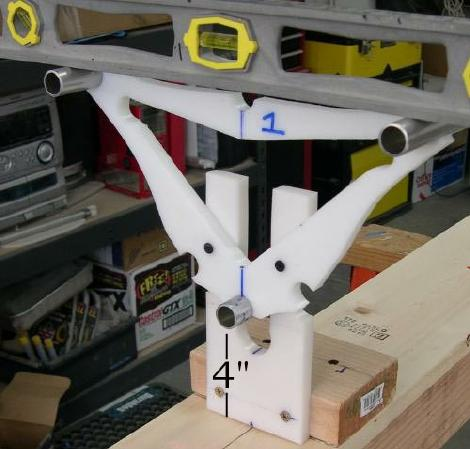
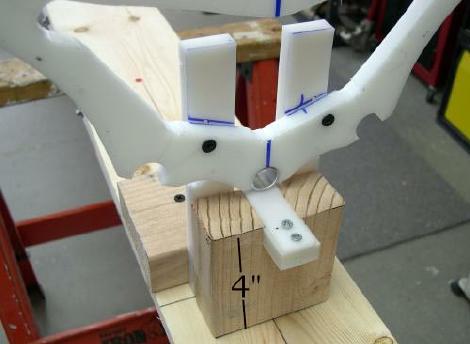
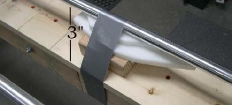

| Attaching Cross Sections 1 and 8 | Menu Previous Page Next Page |
|

3. Level the cross sections horizontally and secure the second deck screw. Sea Ranger cross sections 1 and 8 are attached to the stations at the same height. In this instance, the height from the top of the strongback (0" baseline) to the bottom of the keel tube is 4 inches. The offsets call for a height of 1 inch at both sections 1 and 8.
|

4. Cross section 8 is attached at 4" above the strongback to match the height of cross section 1.

5. The keel low point (0") is 8.5ft from the bow. Since the lowest point is 1 inch below sections 1 and 8, the keel is secured at 3 inches above the strongback (baseline) during construction to maintain the designed rocker.
|